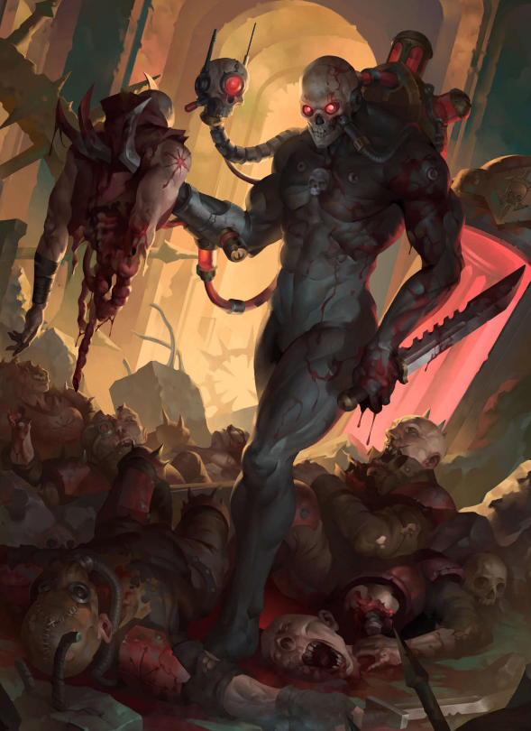

Dossier Classifié 777.M41
L’Officio Assassinorum n’est pas une organisation. C’est un outil. Un instrument de suppression, affûté au fil des millénaires pour éliminer ce que l’Imperium ne peut ni juger publiquement, ni affronter ouvertement.
Là où une armée échoue, où une croisade coûterait trop de vies, où une guerre attirerait une attention dangereuse, un assassin est envoyé.

MANDAT SACRÉ
Les agents de l’Officio ne sont plus vraiment humains. Recrutés jeunes, brisés, reconstruits, conditionnés, ils deviennent des armes vivantes dédiées à une seule fonction. Tuer.
Leur formation détruit toute identité précédente. Leur loyauté n’est pas basée sur la foi, mais sur un conditionnement absolu.
Plusieurs temples composent l’Officio Assassinorum. Chacun spécialisé dans une méthode d’exécution.
Le Temple Vindicare privilégie la précision. Un tir. Une cible. Une mort certaine à distance extrême.
MÉTHODES ET PURGES
Le Temple Callidus excelle dans l’infiltration. Métamorphose, tromperie, manipulation. L’ennemi est déjà condamné avant de comprendre qu’il est observé.
Le Temple Eversor incarne la destruction brute. Drogues de combat, violence incontrôlable, massacre total. Une fois déployé, il ne s’arrête qu’une fois la cible et tout ce qui l’entoure réduits en morceaux.
Le Temple Culexus représente une anomalie. Ses agents sont des parias, des absences dans le Warp. Leur simple présence perturbe les psykers et affaiblit les entités démoniaques.
L’activation d’un assassin n’est jamais prise à la légère. Elle nécessite l’accord des plus hautes autorités impériales. Car une fois lancé, le processus ne peut être arrêté.
HÉRITAGE DE TERREUR
Les cibles sont variées. Gouverneurs corrompus. Chefs de guerre xenos. Hérétiques influents. Parfois même des figures impériales devenues problématiques.
L’Officio Assassinorum ne rend pas la justice. Il rétablit un équilibre jugé nécessaire par ceux qui le commandent.
Les opérations sont silencieuses. Les preuves disparaissent. Les témoins aussi.
Dans de nombreux cas, la mort de la cible est attribuée à un accident, une maladie ou une révolte locale. La vérité n’est pas destinée à être connue.
Il faut comprendre ceci. L’Officio Assassinorum est la preuve que l’Imperium préfère supprimer un problème proprement plutôt que de risquer une guerre qu’il ne peut pas contrôler.
Et lorsqu’un nom apparaît sur leur liste, il est déjà trop tard.
Fin de l’extrait. Toute référence à une opération de l’Officio Assassinorum doit être immédiatement classifiée.